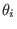
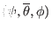
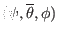

If the Jacobian
 is chosen to be of the following form
is chosen to be of the following form
Then
 in Eq. (191) is written
in Eq. (191) is written
and the Jacobian
 given by Eq. (193) now
takes the form
given by Eq. (193) now
takes the form
Equation (195) indicates a set of poloidal points with equal arc
intervals corresponds to a set of uniform  points. Therefore this
choice of the Jacobian is called the equal-arc-length Jacobian. Note that Eq.
(195) does not involve the radial coordinate  . Therefore the
values of
. Therefore the
values of  of points on any magnetic surface can be determined before
the radial coordinate is chosen. By using Eq. (195) (to calculate
) and the definition of (to calculate ), we obtain a
magnetic surface coordinate system
.
of points on any magnetic surface can be determined before
the radial coordinate is chosen. By using Eq. (195) (to calculate
) and the definition of (to calculate ), we obtain a
magnetic surface coordinate system
.
yj
2018-03-09